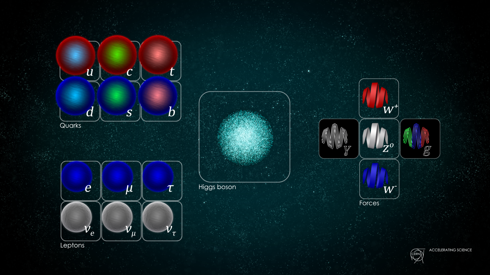
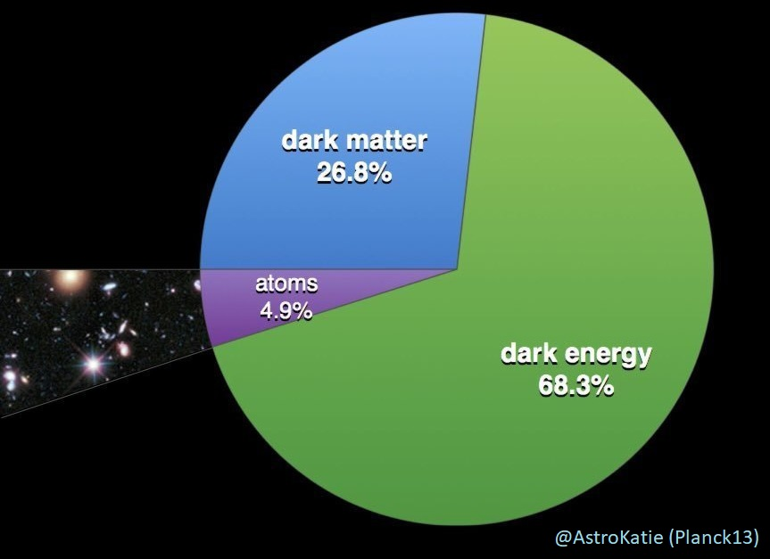

<h1> The next frontier in fundamental physics </h1> <br> <div class="r-stretch"></div> ## Benjamin M. Roberts <br> #### _School of Mathematics and Physics,_ #### _University of Queensland, Australia_ <br> <div style="float: center; width: 100%"> <img src="img/uq-logo.svg" width="20%"> </div> <br> #### _[broberts.io/talks](broberts.io/talks)_ <br> <br><br>
# Current Theory of the Universe <!-- ## 1. The Standard Model --> <br> <div style="text-align: center; float: left; width: 45%"> <div class="fragment" data-fragment-index="1"> <h2>Standard Model</h2> <!-- <br> --> <br> <font size="3"> Daniel Dominguez/CERN</font> </div> <br><br> <div style="text-align: left" class="fragment" data-fragment-index="2"> <h3> • Quantum theory of particles and fields</h3> <h3> • Describes universe on the tiniest scales</h3> </div> </div> <div style="text-align: center; float: right; width: 45%"> <div class="fragment" data-fragment-index="3"> <h2>General Relativity</h2> <br> <font size="2"> Kristina Armitage/Quanta Magazine</font> </div> <br><br><br><br> <div style="text-align: left" class="fragment" data-fragment-index="4"> <h3> • Einstein's theory of space-time and gravity</h3> <h3> • Describes universe on the largest scales</h3> </div> </div>
# Extraordinarily Successful theories <!-- ## 1. The Standard Model --> <br> <div style="text-align: center; float: left; width: 33%"> <div class="fragment" data-fragment-index="1"> <br> <font size="4"> * Bonus points for spotting mistake in the mug!</font> </div> <br><br> <div class="fragment" data-fragment-index="3"> <br> </div> </div> <div style="text-align: left; float: right; width: 65%"> <div style="text-align: left" class="fragment" data-fragment-index="1"> <h2>Standard Model</h2> <h3> • Theory agree extremely well with experiment</h3> <h3> • Predicted new particles and interactions</h3> </div> <div class="fragment fade-right" data-fragment-index="2"> <h3> • Higgs boson: discovered by CERN ~50 years after prediction</h3> </div> <br><br><br><br><br> <div style="text-align: left" class="fragment" data-fragment-index="3"> <h2>General Relativity</h2> <h3> • Tested from lab to extra-galactic scales</h3> <h3> • Explained precession of mercury and gravitational lensing</h3> <div class="fragment fade-right" data-fragment-index="4"> <h3> • Gravitational waves: observed by LIGO ~100 years after prediction</h3> </div> </div> <br> <br> <div class="fragment fade-right" data-fragment-index="5"> <h2> However, all is not well...</h2> </div> </div> <!-- <div style="text-align: right" class="fragment" data-fragment-index="5"> <br><br> <h2> However...</h2> </div> -->
# Unexplained Mysteries <!-- <div class="fragment"> <h2>Several deep inconsistencies with the observed universe</h2> </div> --> <br> <br> <div style="text-align: center; float: left; width: 70%"> <div class="fragment" data-fragment-index="0" style="text-align: left;" data-markdown> <h2>Why is there so much more matter than anti-matter?</h2> <h3> • There should have been equal amounts created </h3> </div> <!-- <br> <div class="fragment" data-fragment-index="1" style="text-align: left;" data-markdown> <h2>Is there a quantum theory of gravitation?</h2> <h3> • Quantum mechanics and general relativity incompatible </h3> </div> --> <br> <div class="fragment" data-fragment-index="1" style="text-align: left;" data-markdown> <h2>What is Dark Energy?</h2> <h3> • Explain accelerating expansion of the Universe </h3> </div> <br> <div class="fragment" data-fragment-index="2" style="text-align: left;" data-markdown> <h2>What is Dark Matter?</h2> <h3> • Missing mass in galaxies </h3> </div> <br> <div class="fragment" data-fragment-index="3" style="text-align: left;" data-markdown> <h3> 95% of universe is "dark"; we can only use the 5% to learn about the rest! </h3> </div> </div> <div style="text-align: left; float: right; width: 25%"> <br> <img class="fragment" data-fragment-index="0" src="img/antimatter.png" width="95%"> <br><br><br><br>  </div>
# First Evidence for Dark Matter <div style="text-align: center; float: left; width: 45%"> <br> <h3>Coma Cluster</h3> <br> <br> <font size="3"> Sloan Digital Sky Survey + Spitzer Space Telescope [NASA / JPL-Caltech / L. Jenkins]</font> <br><br> <div style="text-align: left" class="fragment" data-fragment-index="2"> <h3> • Clusters of galaxies observed to be too fast</h3> <h3> • Visible matter: not enough gravity to explain</h3> <h3> • <em>Dark matter</em>: interacts only gravitationally</h3> </div> </div> <div style="text-align: center; float: right; width: 45%"> <div class="fragment" data-fragment-index="3"> <br> <h3>Major breakthrough</h3> <img src="img/vera-rubin.jpg" width="85%"><br> <font size="3"> [AIP Emilio Segrè Visual Archives, Rubin Collection] </font> </div> <br> <div style="text-align: left" class="fragment" data-fragment-index="3"> <h3> • Vera Rubin, Kent Ford, and others in the 1970s</h3> <h3 class="fragment"> • Dark Matter was <i><b>everywhere</b></i></h3> <h3 class="fragment"> • And there was <i><b>lots</b></i> of it</h3> </div> </div>
# Galactic Rotation Curves ## _all_ galaxies: stars move faster (left) than predicted (right) <p data-markdown>• 80 - 95% of mass is "missing"</p> <video width="77%" controls playsinline autoplay muted loop> <source src="img/Comparison_of_rotating_disc_galaxies_in_the_distant_Universe_and_the_present_day.webm" type="video/webm"> <!-- <source src="https://upload.wikimedia.org/wikipedia/commons/4/4c/Comparison_of_rotating_disc_galaxies_in_the_distant_Universe_and_the_present_day.webm" type="video/webm"> --> </video> <font size="3">[ESO/L. Calçada, Creative Commons]</font> <br>
# Evidence builds up <div style="text-align: left; float: left; width: 50%"> <div> <h2> Rotation curves</h2> <h3> • Missing galactic matter</h3> </div> <div class="fragment"> <br> <h2> Gravitational lensing</h2> <h3> • Gravitational bending of light</h3> </div> <div class="fragment"> <br> <h2> Cosmic Microwave Background</h2> <h3> • Gravitational imprint on background radiation</h3> </div> <div class="fragment"> <br> <h2> Baryon Acoustic Oscillations</h2> <h3> • Sound waves (density fluctuations) in matter</h3> <h3> • Coming up next: Cullan's talk</h3> </div> <div class="fragment"> <br> <h2> Large-Scale Structure Simulations</h2> <h3> • Dark Matter required to match observations</h3> </div> </div> <div style="text-align: center; float: right; width: 50%"> <br><br> <b>Large-Scale Structure simulation:</b><br><br> <br> <font size="3">[Volker Springel/MPI, Wikimedia Commons]</font> </div>
# How to break physics? ## Want to find direct evidence for physics _beyond_ standard model <div class="fragment" style="text-align: center; float: left; width: 50%"> <br> <br> <br> <img src="img/lhc.png" width="90%"><br> <font size="3">[CERN]</font> </div> <div style="text-align: left; float: right; width: 45%"> <br> <div class="fragment"> <h2> Particle Accelerators</h2> <h3> • Directly search for new particles</h3> <h3> • High energy, very expensive</h3> </div> <div class="fragment"> <br> <h2> CERN/LHC</h2> <h3> • Hoped to find evidence for something beyond</h3> <h3> • So far, no luck!</h3> </div> <div class="fragment"> <br> <h2> Alternative approach</h2> <h3> • Low-energy, high precision</h3> <h3> • Look for any violations of laws of physics</h3> </div> </div>
# Atomic Clocks: <br> ### Clock: frequency reference + count oscillations <br> <br> <div class="fragment fade-in" data-fragment-index="0" style="text-align: center; float: left; width: 32%"> <img src="img/Bohr.png" width="70%"><br> <font size="3"> [JabberWok/Wikimedia Commons]</font> <br><br> <h3> Atomic transition: "perfect*" frequency reference </h3> </div> <div class="fragment fade-in" data-fragment-index="1" style="text-align: center; float: left; width: 32%"> <img src="img/laser-JILA.jpg" width="100%"> <font size="3"> [JILA]</font> <br><br><br><br> <h3> Laser: oscillations of light<br> Compare frequency to atomic transition </h3> </div> <div class="fragment fade-in" data-fragment-index="2" style="text-align: center; float: right; width: 32%"> <img src="img/Wcislo2016.png" width="95%"> <font size="3"> [Wcislo, Science 2016]</font> <br><br> <h3> Lock on: Adjust laser to maximise transition rate </h3> </div>
# "Listen" to the hum of the universe using atomic clocks <br> <div style="text-align: left; float: left; width: 50%"> <br> <br> <img src="img/NHanacek_NIST.png" width="90%"><br> <font size="3">[N Hanacek/NIST]</font> </div> <div style="text-align: left; float: right; width: 50%"> <br> <div class="fragment"> <h2>Absurdly accurate</h2> <h3> • Best atomic clocks: accurate to partis in 10<sup>18</sup> </h3> <h3> • Lose less than 1 second over lifetime of the universe </h3> </div> <br> <br> <div class="fragment"> <h2>Why?</h2> <h3> • GPS navigation relies on high-accuracy clocks</h3> <h3> • Geodesy and earth science</h3> </div> <br> <br> <div class="fragment"> <h2>Also: fundamental science</h2> <h3> • New physics: impact ticking of atomic clocks</h3> <h3> • Clocks might tick differently in parts of the universe </h3> </div> <br> </div>
# Example experiment: GPS.DM <div style="text-align: left; float: left; width: 35%"> <br> <h3>• 30 Cs, Rb atomic clocks</h3> <br> <h3>• Over 20 years of high-quality data</h3> <br> <h3>• Publicly available (JPL)</h3> <br> <h3>• 50,000 km Dark Matter observatory</h3> <br> <div class="fragment fade-in" data-fragment-index="1"> <video width="75%" data-autoplay muted> <source src="img/GPSDM.mp4"> </video><br> <font size="3">[Video: Conner Dailey (honors student)]</font> </div> </div> <div style="text-align: center; float: right; width: 65%"> <br> <br> <img src="img/gps-data.png" width="45%"> <br> <br> <br> <div class="fragment fade-in" data-fragment-index="1"> <h2>Look for "clumps" of dark matter</h2> </div> <br> <br> <div class="fragment fade-in"> <!-- <img src="img/GPSDM-results.png" width="98%"> --> <h3>• Didn't find any definitive evidence</h3> <h3>• Puts constraints on dark matter models</h3> <br> <b>Roberts</b>, Blewitt, Dailey, Murphy, Pospelov, Rollings, Sherman, Williams, Derevianko, <br> <a href="http://www.nature.com/articles/s41467-017-01440-4"> [Nature Comms. (2017)]</a> <!-- <h3>(Just one example, many others)</h3> --> </div> </div>
# Do the laws of nature break in extreme environments? ## Super-massive black hole at the Galactic Centre <div style="text-align: center; float: left; width: 50%"> <div class="fragment" data-fragment-index="1"> <!-- <h2>Natures atomic clocks</h2> --> <img src="img/Galactic_centre_pillars.jpg" width="100%"><br> <font size="3">[ESA / C. Carreau]</font> </div> <br> <div style="text-align: left" class="fragment" data-fragment-index="2"> <h3> • Use nature's atomic clocks:</h3> <h3> • Atom's in stars near the black hole!</h3> <h3> • Absorb/emit light at specific frequencies</h3> <h4> • Compare to same atoms on Earth</h4> <br> </div> <div class="fragment" data-fragment-index="4"> Hees, Do, <b>Roberts</b>, Ghez et al.,<a href="https://link.aps.org/doi/10.1103/PhysRevLett.124.081101"> [Phys.Rev.Lett. (2020)]</a> </div> </div> <div style="text-align: center; float: right; width: 45%"> <div class="fragment" data-fragment-index="3"> <!-- <h2>General Relativity</h2> --> <img src="img/keck-ao.jpg" width="90%"><br> </div> <br> <div style="text-align: left" class="fragment" data-fragment-index="3"> <h3> • Keck telescope in Hawaii</h3> <h3> • with UCLA Galactic Centre Group</h3> <br> <h4> • Observations led by Tuan Do</h4> <h4> • Andrea Ghez: 2020 Nobel prize for discovery of black hole</h4> <br> </div> </div>
# The next frontier in fundamental physics <div style="text-align: left; float: left; width: 65%"> <br> <h2>Standard Model + General Relativity</h2> <h3> • Extremely successful, but incomplete</h3> <h3> • Our job to search for what's beyond</h3> <br> <h2>Dark Matter</h2> <h3> • Overwhelming evidence: completely in the dark</h3> <h3> • Promising probe for physics beyond Standard Model</h3> <br> <h2>Atomic Physics</h2> <h3> • Low-energy, high precision alternative to CERN/LHC </h3> <h3> • The next frontier in fundamental physics </h3> <br> <div class="frame"> <img src="img/uq-logo.svg" width="25%"> </div> <!-- <img src="img/uq-logo.svg" width="10%"> --> </div> <div style="text-align: left; float: right; width: 35%"> <br><br><br><br><br><br> <img src="img/laser-JILA.jpg" width="99%"><br> <font size="3">[JILA]</font> <br><br><br><br><br> <h4> Benjamin M. Roberts (<a href="https://broberts.io">www.broberts.io</a>)</h4> <h4> <i>Pint of Science, Brisbane, 15 May 2024</i></h4> </div> <!-- <div class="r-stretch"></div> <br> <img src="img/QDM-RoadTrip.png" width="20%"> <img src="img/uq-logo.svg" width="25%"> -->